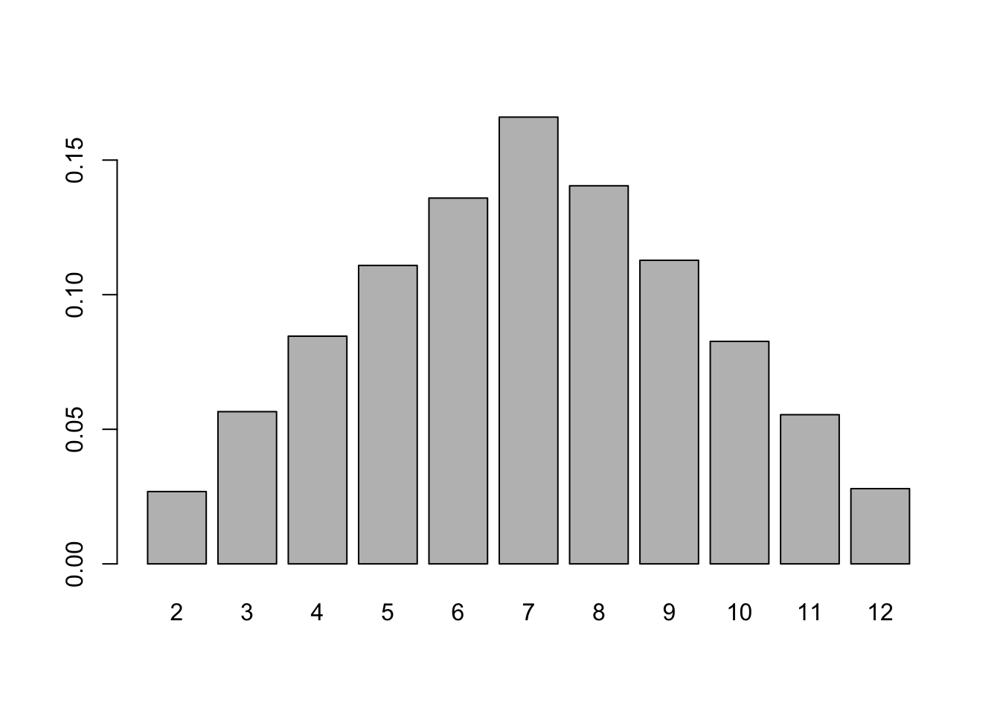
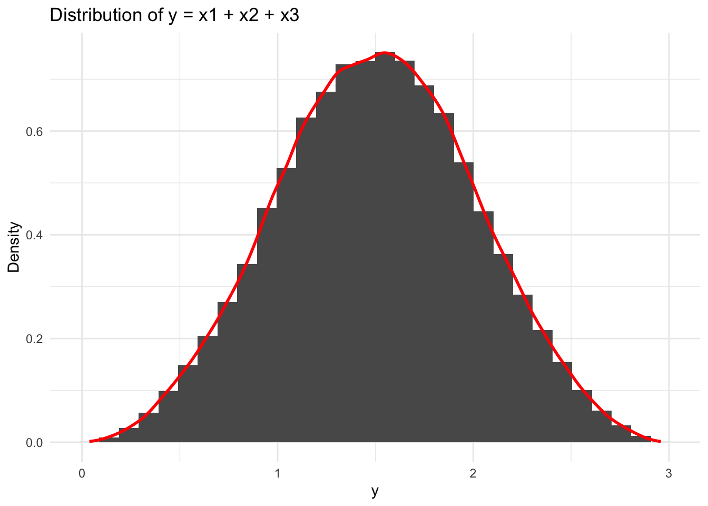

library(DT)
N = 100000 #number of measurements
x1 = sample(1:6,N, replace=T) # first dice (values are from 1 to 6)
x2 = sample(1:6,N, replace=T) # second dice (values are from 1 to 6)
head(x1)[1] 6 6 1 1 5 3The core of any research in social science is to discover and describe relationships between variables. Whether you describe a research puzzle as a “why X despite Y?” type of question, or. The social facts Y that the researchers seek to explain are generally called the dependent variable, the explanandum, while the variables supposed to explain it are called the independent variables or the explanans.
Hence, any research process typically involves the following stages : collection of data, analysis of these data, and drawing interpretations and conclusions based on these data. As such, the data collection phase is crucial in every empirical research project - which is generally the case in political science or sociology.
Of course, many methods exist in practice to make such claims about connection between variables. These methods are generally divided in two large sub-groups : qualitative methods, which are generally based on small-N comparisons and can for instance allow to better access interpretive dimensions, and quantitative methods. The latter methods allow to conduct large N comparisons, to replicate analyses, and have known very important recent developments related to technological improvements in the recent decades (e.g. Computational Social Science, LLMs). Similarly, these methods generally seek to find a. That is, a given variable \(Y\), is caused (and can therefore be predicted) by a series of other variables \(X_1, X_2, X_3, X_4\). Hence, in a very general form, considering that \(Y\) can be explained by \(X_1, X_2, X_3, X_4\) means that we assume that there exists a function \(f : \mathbb{R}^4 \rightarrow \mathbb{R}\) that satisfies : \[ \begin{equation} Y = f(X_1,X_2, X_3, X_4) + \epsilon \end{equation} \]
Take for instance happiness as a variable to explain : as a social scientist, you would like to understand what causes people to be happy or not. Of course, you might have first struggles in defining happiness - an essentially subjective measure -, and you might as well have competing hypotheses about what causes happiness.
Imagine that you have two dices with six faces on each dice. Your random variable is the outcome of each dice that you throw.
You want to assess your chances of obtaining each value contained in the set of potential outcomes \(S = \{2,3,4,5,6,7,8,9,10,11,12\}\). Intuitively, you might want to start by looking at the 2 value : 2 is only obtained in the case where you obtain one for the two dices. That is, for dice 1, you have \(1/6\) of obtaining the value, and then again \(1/6\) of obtaining 1 for the second dice. Overall, the probability of obtaining \(2\), \(P(y=2)\) is therefore : \[ \begin{equation} P_2 = 1/6 \times 1/6 = 1/36 \end{equation} \] Of course, if you now want to look at the probability of obtaining \(3\) as outcome, \(P(y = 3)\) your probability will be the union of two probabilities : the chance of obtaining 1 with dice 1 and 2 with dice 2, or the one of obtaining 2 with dice 1 and 1 with dice 2. Mathematically, this writes : \[ \begin{equation} P(Y=3) = 1/6 \times 1/6 + 1/6 \times 1/6 = 2/36 = 1/18 \end{equation} \] You see that the probability is doubled, compared to 2.
If you look at the joint probability, this corresponds to a diagonal : 2. Hence, you see that obtaining 7 is the last diagonal and therefore \[ \begin{equation} P(Y=7) = 6\times1/36 = 1/6 \end{equation} \]
\[\begin{array}{c|cccccc} & 1 & 2 & 3 & 4 & 5 & 6 \\ \hline 1 & \frac{1}{36} & \frac{1}{36} & \frac{1}{36} & \frac{1}{36} & \frac{1}{36} & \frac{1}{36} \\ 2 & \frac{1}{36} & \frac{1}{36} & \frac{1}{36} & \frac{1}{36} & \frac{1}{36} & \frac{1}{36} \\ 3 & \frac{1}{36} & \frac{1}{36} & \frac{1}{36} & \frac{1}{36} & \frac{1}{36} & \frac{1}{36} \\ 4 & \frac{1}{36} & \frac{1}{36} & \frac{1}{36} & \frac{1}{36} & \frac{1}{36} & \frac{1}{36} \\ 5 & \frac{1}{36} & \frac{1}{36} & \frac{1}{36} & \frac{1}{36} & \frac{1}{36} & \frac{1}{36} \\ 6 & \frac{1}{36} & \frac{1}{36} & \frac{1}{36} & \frac{1}{36} & \frac{1}{36} & \frac{1}{36} \end{array}\]Imagine now that you are skeptical of these theoretical findings, and you decide to carry a small experiment in order to test this. Let’s imagine that you are feeling very bored for an entire year and that you decide to launch these two dices a hundred thousand times, and report results in two tables \(X_1, X_2\) with the result for each dice. Your results might look like :
library(DT)
N = 100000 #number of measurements
x1 = sample(1:6,N, replace=T) # first dice (values are from 1 to 6)
x2 = sample(1:6,N, replace=T) # second dice (values are from 1 to 6)
head(x1)[1] 6 6 1 1 5 3In fact your final result - the sum of the two dices -, is the union of two independent events \(X_1, X_2\) being respectively the outcome of dice \(1\) and \(2\), provided that they are indeed independent. Your final result \(Y\) is therefore simply the sum of these two random variables. You can then sum :
and the function table() gives you the number of occurences for each value. The probability to obtain 7 from your sample is then simply the number of occurences that you have measured, divided by the total number of attempts that you have done, in this case 10000. Hence :
y
2 3 4 5 6 7 8 9 10 11
0.02687 0.05655 0.08459 0.11087 0.13589 0.16597 0.14046 0.11278 0.08265 0.05542
12
0.02795 
These values are called the probability distribution of the variable Y. That is, for each outcome of Y, there is a probability (here shown on the barplot). These probabilities follow the simple rule : \[\begin{equation} \sum_{i=1}^N P(y_i) = P(y_1)+P(y_2) +... P(y_n) = 1 \end{equation}\]
That is, the sum of all probabilities over the set of potential outcomes \(\{y_1,y_2,y_3,..., y_n\}\) is equal to 1. The \(\Sigma\) symbol simply stands for sum. Now imagine that you want to know the average value
\[\begin{equation} \mathbb{E}(y) = \sum_{i=1}^N y_i P(y_i) = \bar{y} \end{equation}\]
This value is called the expectation. In the case
Imagine now that, due to the extreme fatigue provoked by the repetitive throwing of those dices, you throw those a bit too wildly and one falls under the table where you are. The other one is there and shows the value 3. You want to know the expected value of \(y\), knowing that one dice among the two is 3. This is called a conditional probability and noted \(P(y|X_1)\), with \(| X_1\) simply meaning that \(X_1\) is considered fixed (here worth 3). Since \(X_1\) is fixed, the probability is \(P(y|X_1) = 1/6\), and knowing this information is actually very precious on Y, because it considerably reduces the set of potential outcomes : \[ Y \ge 4 \text{, } Y\le 9 \text{ and } S = \{4, 5, 6, 7, 8, 9\} \] \[ \begin{equation} \mathbb{E}(y|X_1 = 3) = \sum_{i=1}^N y_i P(y_i|X_1 = 3) \end{equation} \] and so we get : \[ \begin{align} \mathbb{E}(y|X_1 = 3) = 1/6 \times (4 + 5 + 6 + 7 + 8 + 9) = 6.5\\ \mathbb{E}(y|X_1 = 4) = 1/6 \times (5 + 5 + 7 + 8 + 9 + 10) = 7.5 \end{align} \] Notice that the expected value of y therefore changes, as a function of the explanatory variable, \(X_1\).
Now simply imagine that you repeat that process with dices that have \(n = 1000, 1400, 800\) faces, with each value ranging from \(1/n to 1\). And that you would like to know what are the final probabilities of having any decimal number between 0 and 3. Of course, the manual computation of this would be very cumbersome - which is why automising the process with R can prove very useful. Reusing the same code would give :
Attaching package: 'dplyr'The following objects are masked from 'package:stats':
filter, lagThe following objects are masked from 'package:base':
intersect, setdiff, setequal, unionN = 100000 #number of measurements
x1 = sample(1:1000,N, replace=T)/1000 # first dice (values are from 1 to 6)
x2 = sample(1:1400,N, replace = T)/1400
x3 = sample(1:800,N,replace = T)/800
y = x1+x2+x3
dat <- data.frame(y)
ggplot(dat, aes(x = y)) +
geom_histogram(aes(y = after_stat(density))) +
geom_density(color = "red", linewidth = 1) +
labs(title = "Distribution of y = x1 + x2 + x3",
x = "y",
y = "Density") +
theme_minimal()`stat_bin()` using `bins = 30`. Pick better value `binwidth`.
\[ \begin{equation} \hat{\beta} = (X'X)^{-1}X'y \end{equation} \]
Second example: